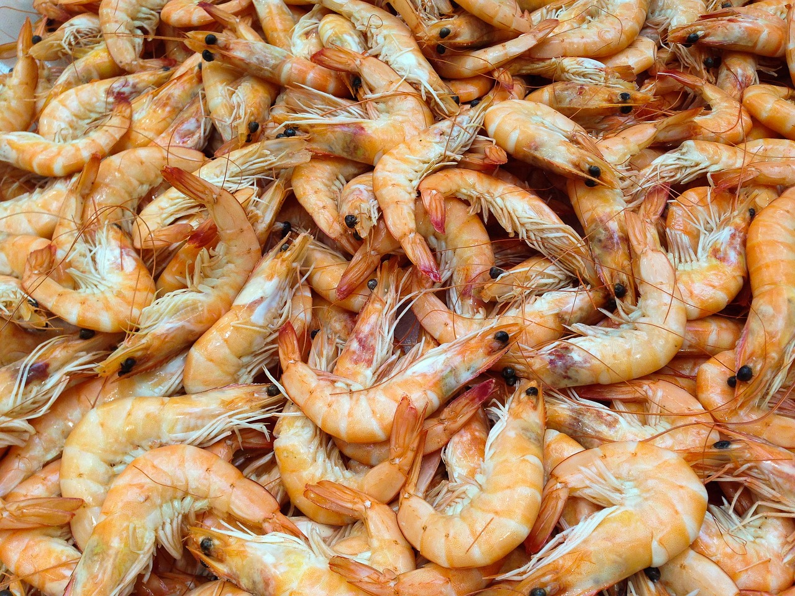

Sector Pathways › Seafood Processing
Seafood Processing
We work with seafood processors to improve reuse potential and discharge stability - by controlling proteins, grease, and odour risk while accounting for the salinity constraints that often define the reuse ceiling.
A pathway for saline, odour-sensitive organics
Seafood processing streams can be high in proteins and grease and may carry elevated salinity. That combination drives odour risk and can limit biological performance and reuse options.
We work with seafood processing clients to confirm the staged logic, the upstream diligence needed to size accurately, and the performance requirements that protect against chronic odour and stability issues.
Stage 1
Capture fibres, solids & grease
Robust screening/DAF logic to protect downstream stability.
Stage 2
Route organics for load reduction
Assess anaerobic liquids where viable; otherwise stabilise via aerobic stages.
Stage 3
Polish for target end‑use
Set filtration/disinfection and manage salinity constraints.
Stage 4
Control odour & residuals
Define odour/septicity controls and residuals routing with performance checks.
Where stability and water savings start
We start with a practical water balance: recoverable volume vs fit‑for‑purpose demand. Savings become reliable when the end‑use target, constraints, and review checks are agreed early - so the treatment system is sized for verification, not hope.
In seafood processing, salinity is often the binding constraint on reuse - it shapes biological stage selection, membrane viability, and how far treated water can actually be used before quality review fails.
Typical savings levers
- Reduced make‑up by reusing treated water for utilities/washdown where safe
- Lower odour and compliance risk through stable upstream control
- Reduced discharge variability by balancing production peaks
- High‑strength streams can be routed through anaerobic treatment to reduce aeration demand and stabilise polishing - expanding the recoverable portion where conditions allow.
Constraints that set the ceiling
- FOG/protein loads and how they vary by species/production schedule
- Odour/septicity risk points and ventilation/odor control needs
- Cleaning chemicals and shock loads from hygiene routines
- Space for equalisation and residuals handling (sludge/dewatering)
Stable reuse or reduction usually depends on how salinity, odour, blood and grease carryover, and solids removal are managed through the process.
How EnWater Design supports salinity, odour, and solids control
We prioritise stability and odour control in this sector, early planning salinity and variability early so suppliers design for the actual operating limit, not an optimistic average.
Advisory
Define targets within salinity site conditions
- Set reuse/discharge goals acknowledging salinity and hygiene constraints.
- Agree peak variability and storage needs tied to processing schedules.
- Define performance requirements that protect odour control and operator workload.
Pathway mapping
Stage grease/proteins and reuse barriers
- Map screening/DAF → organics routing → polish/assure stages.
- Clarify odour control connections and chemical dosing boundaries.
- Use module references to align proposals and verification checks.
Typical modules: MBBR+ Batch+ Micra+
Oxiclear+ Sludge+
Specialist
Check salinity limit, odour drivers, and biological stability
- Confirm salinity limit and its impact on biological and membrane stages.
- Assess sulphides/odour drivers and ventilation/capture needs.
- Benchmark similar seafood sites to avoid chronic odour/failure modes.
What must be confirmed before odour and salinity control are fixed
For seafood sites, we confirm salinity variation, odour risk points, cleaning shocks, equalisation needs, and residuals handling before control stages are fixed.
- FOG/protein loads and how they vary by species/production schedule
- Odour/septicity risk points and ventilation/odor control needs
- Cleaning chemicals and shock loads from hygiene routines
- Space for equalisation and residuals handling (sludge/dewatering)
- Reuse targets and performance expectations (QA/QC and audits)
- Residuals/odour site conditions: protein/FOG loads, sludge route, and whether anaerobic digestion (AD) is relevant (on‑site or via utility), including gas/odour controls and hygiene constraints.
- Anaerobic viability for liquids (UASB/EGSB/IC): COD strength, temperature/heat, sulphate/sulphide risk, inhibitory cleaners - plus gas and odour connections.
- Benchmark assumptions against comparable installations (performance, O&M approach, typical failure modes).
Typical seafood wastewater treatment routes
These routes reflect how seafood wastewater is usually controlled: solids and odour drivers first, salinity-aware treatment next, and polishing only where reuse or discharge conditions make it worthwhile.
Stage 1
Capture solids and grease early
Protect downstream stages by removing solids/FOG up front.
Stage 2
Equalise for peak stability
Buffer production cycles so biology stays stable.
Stage 3
Anaerobic high‑strength stage (where viable)
Seafood effluent can carry high, variable organics and sulphide risk. An anaerobic reactor (UASB/EGSB/IC) can reduce the load ahead of aerobic treatment, reduce aeration demand, and stabilise downstream polishing - provided fats, solids and inhibitors are controlled.
Stage 4
Robust biological removal
Control organics and odour risk with scalable, proven biology.
Stage 5
Polish and disinfect for assurance
Apply oxidation and membranes as required by end‑use and risk.
Stage 6
Residuals routing
Plan sludge handling with practical O&M and market/compliance constraints.
Stage 7
Residuals stabilisation (AD option for high organics)
Seafood streams can benefit from stabilising residuals and reducing odour risk. If AD is feasible, we define the connections and review checks that keep commissioning predictable.
Anaerobic pre‑treatment and AD for residuals stabilisation are assessed where protein/COD strength, sulphide risk, and salinity conditions support them - as outlined in Stages 3 and 7 above.
Configuration depends on what upstream checks confirm about salinity, organic load, odour risk, and the reuse or discharge target.
What are the sustainability gains: Lower odour risk, steadier treatment, and less avoidable rework
For seafood processing sites, the most useful sustainability gains usually come from odour control, salinity management, and steadier treatment through variable production cycles.
The value here is keeping odour, salinity swings, and cleaning shocks from destabilising the route. That helps the plant run more steadily and reduces avoidable corrective work.
- Potable offset: reuse matched to end‑use quality limits.
- Lower discharge impact: predictable compliance record and reduced shock events.
- Operational sustainability: controls, connections, and maintenance plan sized for actual teams.
Next steps
If you share your end‑use target and constraints, we’ll outline the diligence focus and the module families most likely to fit.
Get In Touch
Share what you’re trying to achieve in Seafood Processing - reuse, compliance, recovery, or reliability. We’ll translate outcomes into a practical scope and a check plan that suppliers can price and verify.
- Your primary end‑use target (cooling, irrigation, washdown, flushing, process reuse) or compliance record
- Approximate flows/loads and where variability shows up (peaks, batches, seasonality)
- Key constraints (space, utilities/heat, shutdown time ranges, operator capacity)
- Known pain points (odour, scaling, fouling, grease/oil, metals/emulsions, shock events)
- What performance sign‑off must look like (KPIs, sampling, commissioning checks, stakeholder approvals)
Fill in the below form and we’ll get you to the right place.